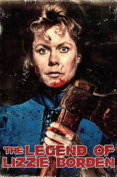

The Legend of Lizzie Borden (1975)


Could this woman commit the crime of the century?

Country:United States, 96 minutes
Spoken languages:English
Genres:Drama, Crime, Horror
Director(s):Paul Wendkos
Writer(s):William Bast
Video Codec:Unknown
Number: 5756
IMDb Rating:

Certification:NR
Storyline:
A dramatization of the famous 1893 Massachusetts trial of the woman accused of murdering her father and stepmother with an ax.
Cast:
Elizabeth Montgomery (as Lizzie Borden), Fionnula Flanagan (as Bridget Sullivan), Ed Flanders (as Hosea Knowlton), Katherine Helmond (as Emma Borden), Don Porter (as George Robinson)
Medium: Media file,
Location: D:\Lizzie Borden\legend of lizzie borden.mp4
Loaned: No
Aspect ratio: Unknown